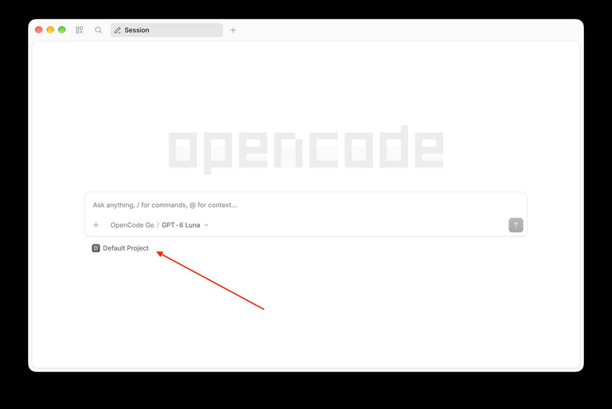
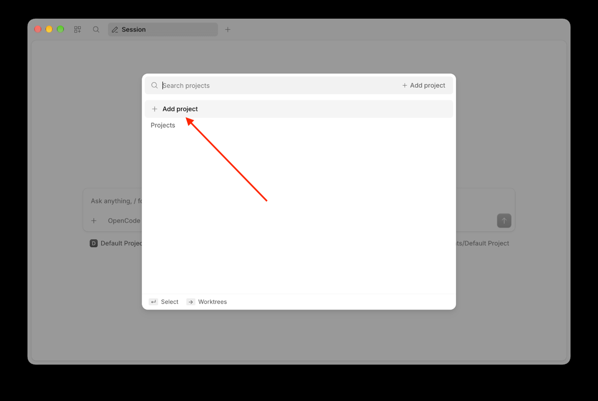
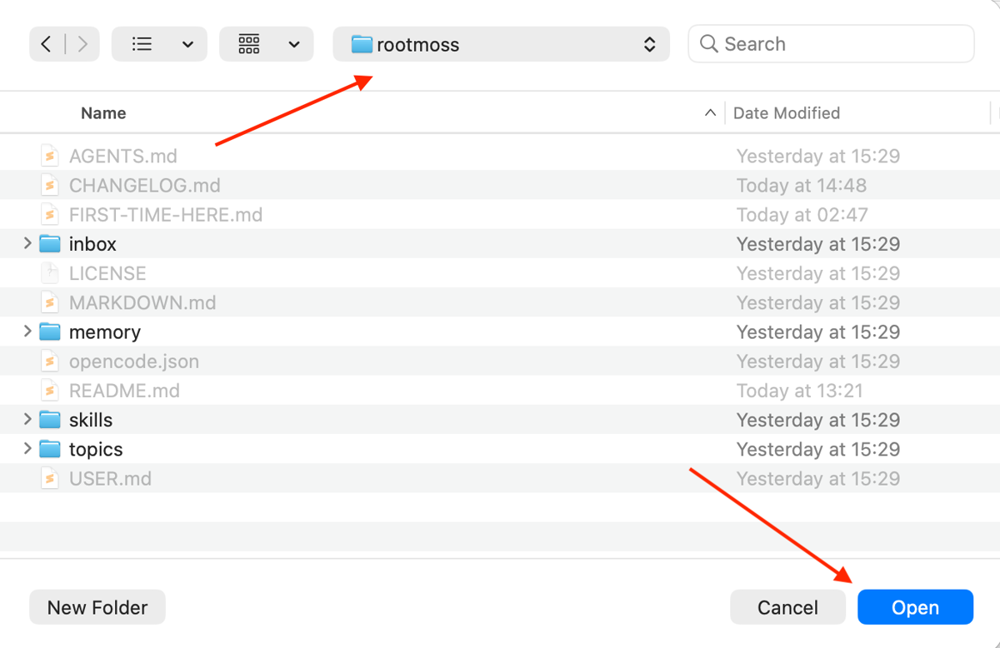
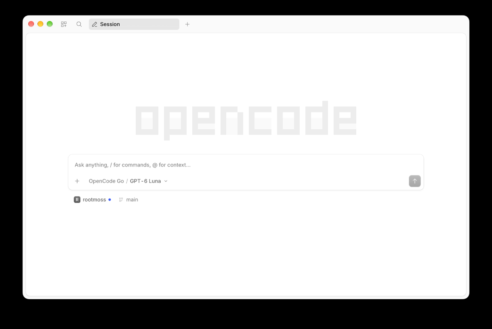
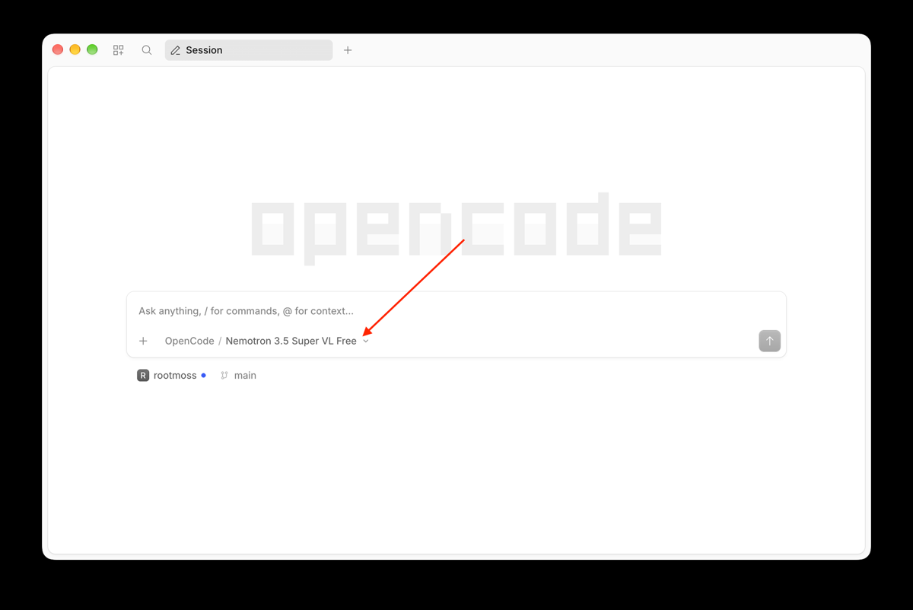
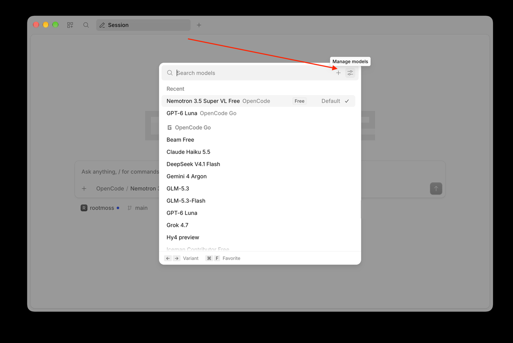
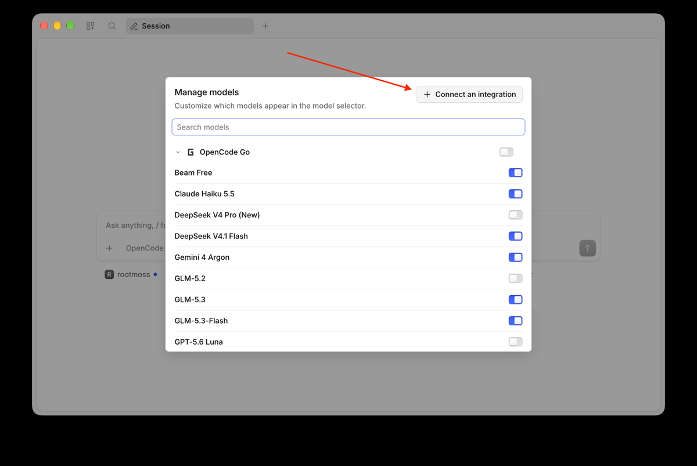
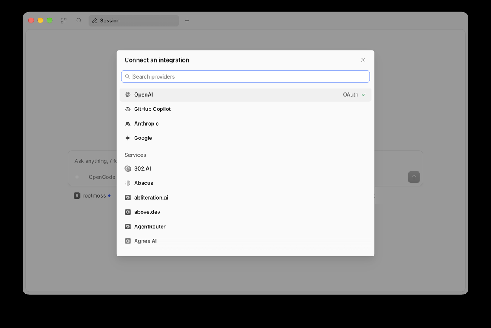

Your AI keeps forgetting you.
Your files don't.
Your AI's memory, as a folder on your computer.
ChatGPT, Grok and Claude all remember what you've told them — but that memory lives inside their app, on their servers. Rootmoss is the same idea: plain files on your own disk, read by the AI you already use. It stays yours, and nothing gets deleted — notes get marked, not lost.
On GitHub and happy with git? Use this template — your copy picks up future updates.
Works with OpenCode — a free ChatGPT-style app you install — or anything else that reads AGENTS.md.
Open it like any folder — Finder is enough.
No Rootmoss account. No subscription. No company holding your data.
Why it matters
What changes for you
It's just a folder. What changes is every conversation that comes after.
You stop repeating yourself
From the first message it knows your profile, your open topics and what you learned last time.
Your memory outlives your tools
Plain files you own. Change the model, the tool or the company — your history comes with you.
Nothing gets thrown away
When a note stops being true, it's marked outdated and stays put. Messy is fine; gone isn't.
Every chat makes the next one better
The few things worth keeping — a decision, a lesson, a preference — come back exactly when they're useful.
Nothing phones home
No Rootmoss account, no sync, no server of ours. Add a private git repo later if you want version history.
In use
What it looks like
Three moments: the first conversation, a real request and a later session that already knows you.
read AGENTS.md and FIRST-TIME-HERE.md, then interview me one question at a time to fill in USER.md and propose my first topic
Question 1 of about 7: what's your name, and where do you live?
One message gets you started, and nothing is written until you say yes.
plan a week in lisbon in may for us. we're both vegetarian and we'd rather walk than take buses. also nothing before 10am, we're on holiday not a work trip
One hill a day, then. Do Alfama late afternoon rather than midday: better light, thinner crowds, and you finish at a viewpoint with a drink instead of a queue. Skip Pena; Regaleira is better. Push back if you disagree.
An opinion you can argue with, not a wall of links. Then it saves what's worth keeping.
so we found flights to lisbon. they're cheap, genuinely cheap, but they land at 7am. worth it?
Probably not. Cheap flights to Lisbon are cheap for a reason, and this one charges you in sleep, not money. You said nothing before 10am, and a 7am landing means leaving Brno at three. Worth it only if the saving covers the extra night.
A later session. It had kept the note, so none of that needed saying twice.
An example, to show the shape of it. The second conversation starts where the first one left off.
Under the hood
How it works
Nothing to run, nothing to host. One instruction file at the top of the folder, your notes underneath.
-
You clone the template
You get a folder:
AGENTS.md(the rules your agent follows),USER.md(a short profile of you), sixmemory/folders for different kinds of knowledge, and one folder for each area of your life. -
Your agent reads the rules first
Before you type a word, it reads the rules, your profile and whatever folder you're working in. Like any AI, it sends what it reads to the model you chose: that's the one thing that leaves. The folder never does.
-
It writes back, briefly
After a conversation, it saves a short note, never a transcript, and marks older ones outdated. Next time it reads them back. Before it touches a file, it clears a gate you can read:
opencode.json, set toedit: ask.
rootmoss/ ├── AGENTS.md # the rules your agent reads first ├── USER.md # a short profile of you ├── FIRST-TIME-HERE.md # the guided tour ├── opencode.json # what it may do without asking ├── memory/ # everything worth remembering │ ├── facts/ # what is true │ ├── preferences/ # how you like things │ ├── decisions/ # choices you made │ ├── assumptions/ # guesses, marked as guesses │ ├── lessons/ # what didn't work │ └── context/ # what's true right now ├── topics/ # one folder per subject │ └── plants/ # fictional demo, delete it └── inbox/ # chats that fit nowhere yet
Ask your AI to explain any line — it's all just text. Obsidian or Zed if you want a nicer view — both optional.
Get started
Up and running in about 15 minutes
Two ways in: run it yourself, or have someone set it up once. Either way, the first run is an interview, and your agent asks before it changes anything.
Path A — I'll set it up myself
Create your copy
Click Use this template and make a private repo. Your host still stores the files, so keep raw sensitive documents out of it. Your copy is a snapshot: it only changes when you pull.
Get OpenCode
Desktop app — download, install, no terminal
— or one line in the terminal (brew,
npm or curl). Then clone your repo.
Open it in OpenCode
In the desktop app open Projects and add
your rootmoss folder — OpenCode calls it a
project; it is just this folder. In a terminal, run
opencode from inside it. Four clicks, below.
Pick a model
A provider is whoever supplies the AI — OpenCode Go, ChatGPT, or your own key. Click the model name, then Connect an integration.
Paste the first message
One message sets up your profile and proposes your first topic. Then follow the tour.
Opening your folder — four clicks



rootmoss folder, click the folder
itself — not a file inside it — then
Open.
Choosing a model and a provider




In a terminal instead: /connect, then
/models. Model names are the current catalogue —
yours will differ as models come and go.
Path B — set it up once, for me
No terminal, no install — just a browser
Someone technical does steps 1 to 4 once — about 15 minutes, on a machine you can reach. You do step 5: paste the message, answer the questions. After that you only open a bookmark. This is how family members usually start.
Read AGENTS.md and FIRST-TIME-HERE.md. Then interview me one question at a time to fill in USER.md, and propose my first topic based on what I tell you.
Status
Where the project stands
Rootmoss is v0.1 — early. The details will change as we learn what works. The idea underneath them will not.
What already works
The template installs cleanly and ships with checks you can run. The tour takes about 15 minutes.
Where it comes from
Not a design exercise. The same structure has been running daily for three months: close to 600 commits, just under twenty topics, some 350 memory atoms, and roughly one in five marked superseded or closed rather than deleted.
What it is not
Not a hosted service, not an app, not a sync product and not a subscription. It's a folder your agent reads.
The fine print
MIT license for code and prose, provided as is, without warranty of any kind. The Rootmoss name and logo are not covered by the license. No cookies and no analytics on this page.
Give your agent a memory it can't lose.
One click makes the folder yours. The first interview takes a few minutes — everything after that compounds.